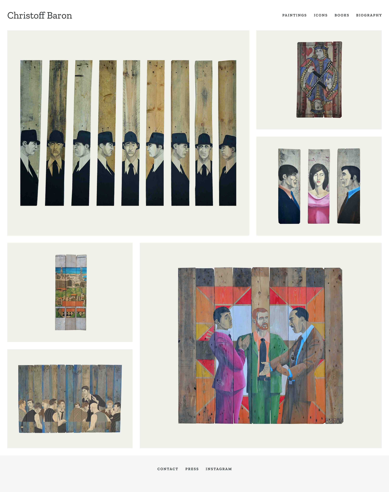

Gallerie des peintures

Christoff Baron utilise comme support des planches de palette et d’échafaudage sur lesquelles il suit les traces laissées par l'homme. Ses créations s'inspirent du travail d'écrivains et de cinéastes comme Shakespeare, Sydnet Lumet, Dostoïevski et Buzzati. Par ailleurs, son intérêt pour l'iconographie le conduit à travailler pour des églises et la cathédrale de Strasbourg. Il est également illustrateur de BD et écrivain.
#F1F0E9
#263238
#F5F5F5
Titre 1 - Zilla Slab 32/36
Titre 2 - Zilla Slab 24/30
Texte - Zilla Slab 14/22